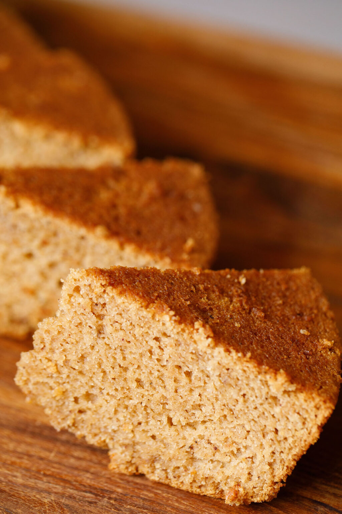
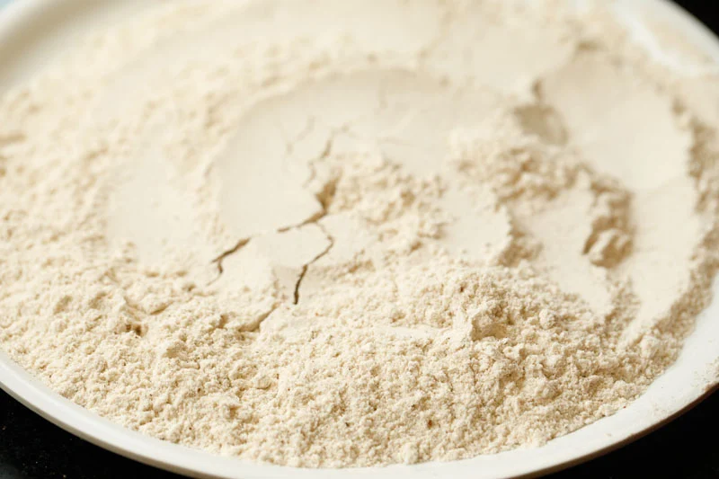
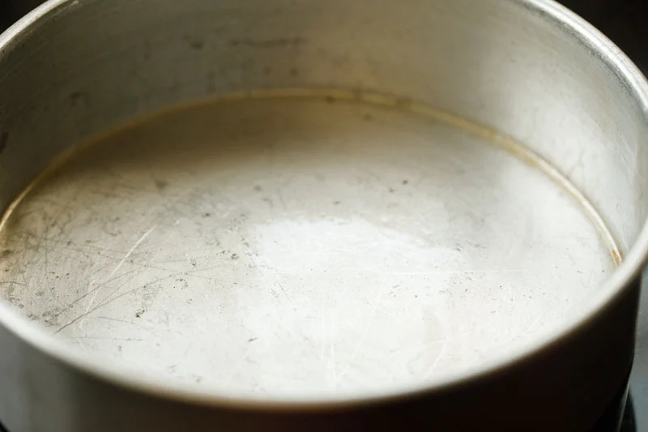
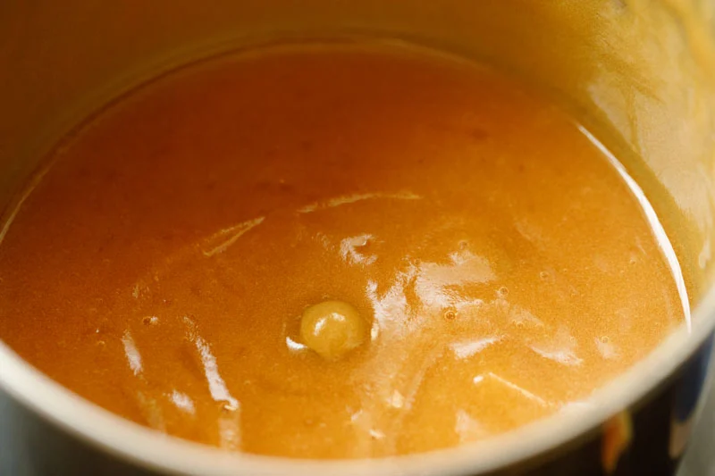
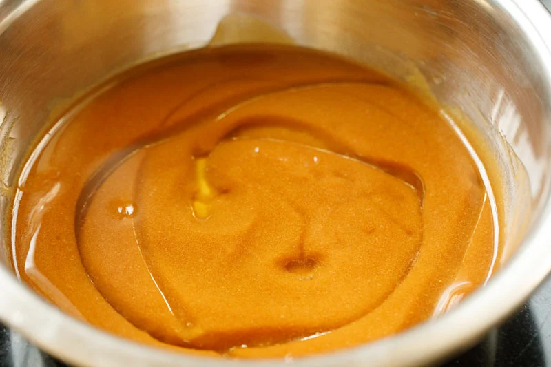
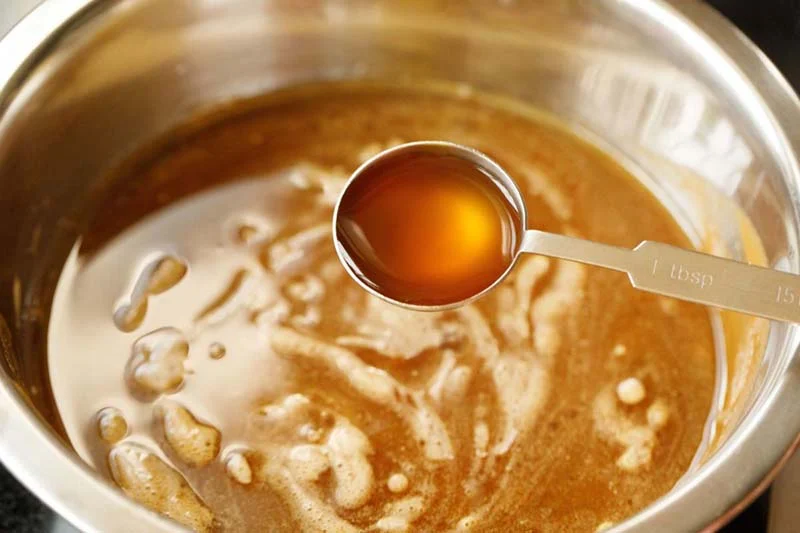
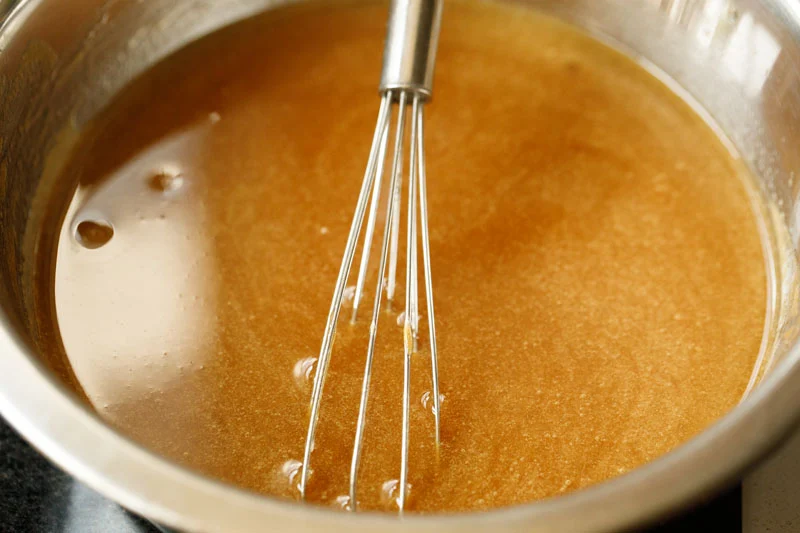
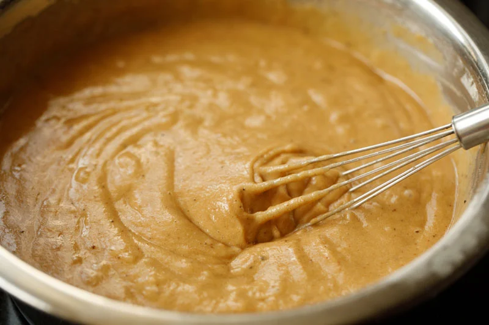
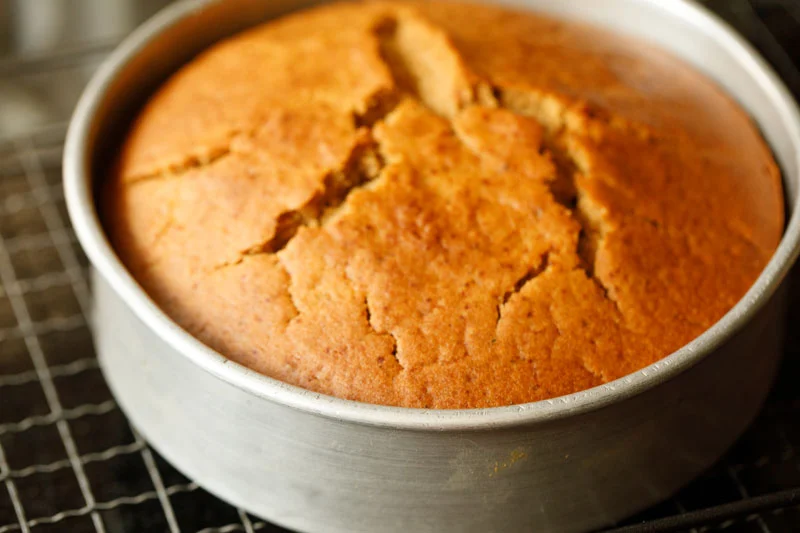
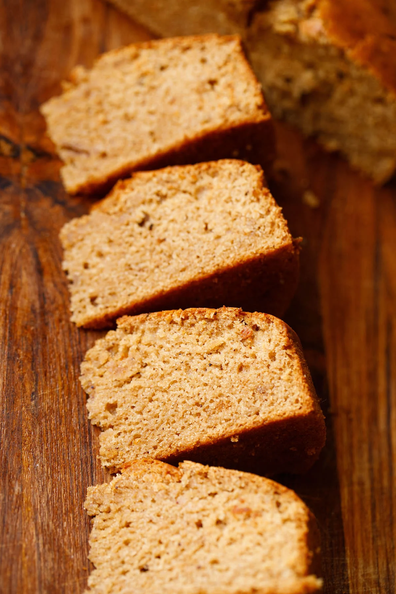

Apple Cake (Eggless, Vegan, Whole Wheat)
Apple cake is a light, soft, spongy cake recipe perfect for both vegans and vegetarians. Made with whole wheat flour, this eggless apple cake recipe is baked to sweet, soft perfection in one pan and under an hour.
How to Make Apple Cake
Add Dry Ingredients
1. First, combine your flour, salt and seasonings in a sieve.
2. Next, add both ½ teaspoon baking soda and 1 teaspoon baking powder to the dry ingredient mixture. Additionally, it’s important to make sure that your leavening ingredients are fresh and active.
3. Then sift the dry ingredients twice and set aside.
Prepare to Bake
4. Now grease a round 7.5 or 8-inch pan with a neutral flavored oil. Alternatively, you can also line the pan with parchment. At this point, you should preheat your oven to 190 degrees Celsius (375 degrees Fahrenheit) for 20 minutes.
Make Apple Puree
5. Next place 2 cups of chopped apples (rinsed, cored and peeled) and ¾ cup raw sugar in a blender cup or container.
6. Blend the apple and sugar mixture to a smooth and fine puree. There should be no chunks of apples!
You will see that the color of puree will darken, but there is nothing to worry.
Transfer Apple Puree
7. When blended smooth, use a spatula to pour the apple puree into a mixing bowl.
8. Now add ¼ cup oil and 1 teaspoon vanilla extract to the apple puree. I used sunflower oil, however, you can use any neutral flavored oil if needed.
Add Liquids
9. Now pour ½ cup of water (at room temperature) or any nut milk (almond, cashew or lite coconut milk).
10. Add a tablespoon of apple cider vinegar, lemon juice or white vinegar.
Whisk Puree Mixture
11. Then with a wired whisk, stir this mixture briskly for 2 to 3 minutes. You want to make sure that all of the ingredients are evenly mixed.
Combine Wet and Dry Ingredients
12. Now add the sifted dry ingredients to the wet ingredients.
13. Gently mix or fold the dry ingredients into the wet ingredients. When mixing the batter together, you want to avoid over working the batter.
Use light pressure and be patient because if you over-mix, your cake may not turn out as soft and fluffy. The batter has a medium flowing consistency.
Pour Batter into Pan
14. Next, pour the batter in the prepared pan. Tap the pan lightly on your counter table to let the air bubbles pass — there is no need to spread the batter on top with a spatula, as the batter will spread out on its own.
Bake your Apple Cake
15. Finally, it is time to bake at 190 degrees Celsius (375 degrees Fahrenheit) for about fifty minutes to one hour. Yes, this cake DOES take a long time to bake — you may even need to add 10-15 minutes onto the cook time depending on your oven.
16. Allow the apple cake to bake, then check its doneness with a wooden skewer. You will know your cake is done when the skewer comes out clean with no sticky batter on it.
17. When your eggless apple cake is done, place the baking pan on a wired tray and allow to cool at room temperature.
18. After cooling, gently use a butter knife to remove the vegan apple cake from the pan.
19. Finally, it is time to serve and enjoy your apple cake! Serve at room temperature with tea or coffee.
